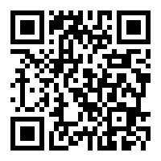

פרטיות והצפנה
בז'אנר ובמציאות
עירא אברמוב, אייקון 2017
iconfestival2017(@)ira.abramov.org
https://ira.abramov.org/encryption101
מי אני
- חובב רשתות חברתיות מקוונות מאז 1990
- עובד כמנהל מערכות ואבטחתן מאז 1995
- פעיל זכויות דיגיטליות מאז 1996
- ממקימי "המקור", "התנועה לזכויות דיגיטליות"
- פעיל נגד המאגר הביומטרי, בעד פרטיות ועוד
- חובב מד"ב, מייקינג, מדע וחשיבה ספקנית
- מדי פעם מרצי בכנסי האגודה
מטרות להיום
- רעיונות כלליים על מהי הצפנה דיגיטלית
- הגדרה כללית של מהי פרטיות
- המלצות על כלים זמינים ואתרים ללימוד הלאה
- בין לבין איזכורים של סיפורת ומד"ב כי אייקון...
- אם ישאר זמן, ורצון מהקהל, אסביר מהו בלוקצ'יין (מטבעות קריפטוגרפיים כמו ביטקוין)
- שאלות ותשובות
לא יהיו פה
- מתמטיקה מפורטת מדי
- המלצות להיות פרנואידים כמוני
- ספוילרים למשחקי הכס
- גיפים של חתולים

המציג אינו מומחה!
לא חייבים לסמוך על שום דבר שאני אומר, רצוי לחפש ולהצליב מקורות ברשת, ולהפעיל שיקול דעת וחשיבה ביקורתית.
הכלים שאני משתמש בהם מתאימים לי, אולי יש אחרים שיתאימו לכם.אני אשתדל לתת לכם כללי אצבע לזהות מה הוא כלי טוב.
למה לי לדעת מה זו הצפנה?
האויב מאזין!
אויב: ריגול תעשייתי. תקיפת טרור מידע. מפרסם או נותן שירות, למשל ביטוח. או סתם גנב זהויות.מה זו פרטיות?
בהרגשה האישית? פילוסופית/אתית? בעיני החוק? האם אפשר לתת תשובה קבועה בכלל, או שתרבות וטכולוגיה תמיד ישנו את ההגדרה?פרטיות: הגדרה מסורתית
"שיעזבו אותי בשקט"פרטיות בעולם המודרני, במיוחד בעידן המידע
מידע = כסף = כלכלה = רווחה = זכויות אזרח = בריאות = חינוך = ביטחוןפרטיות בעולם המודרני, במיוחד בעידן המידע